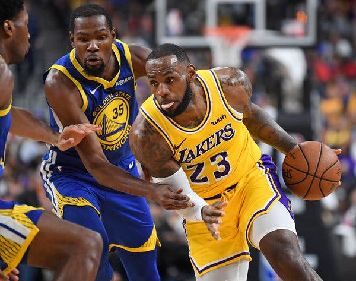

- Michael Jordan
Michael Jeffrey Jordan (Nueva York; 17 de febrero de 1963) es un exjugador de baloncesto estadounidense. Con 1,98 metros de altura, jugaba en la posición de escolta.
Es considerado por la mayoría de aficionados y especialistas como el mejor jugador de baloncesto de todos los tiempos. Se retiró definitivamente en 2003 en los Washington
Wizards, tras haberlo hecho en dos ocasiones anteriores, en 1993 y 1999, después de haber jugado 13 temporadas en los Chicago Bulls.
- LeBron James
LeBron Raymone James Sr. (Akron, Ohio, 30 de diciembre de 1984) es un jugador de baloncesto estadounidense que actualmente pertenece a la plantilla de Los Angeles Lakers de la NBA.
Con 2,06 metros de estatura, su posición es la de alero, pero su talento, versatilidad y poderío físico le permiten jugar tanto de base como de ala-pívot. James es considerado como uno
de los mejores jugadores de baloncesto del mundo y de la historia.
- Kareem Abdul-Jabbar
Kareem Abdul-Jabbar (nacido con el nombre de Ferdinand Lewis Alcindor, Jr., 16 de abril de 1947, Harlem, Nueva York) es un exjugador de baloncesto estadounidense que militó en Milwaukee
Bucks y Los Angeles Lakers de la NBA desde 1969 hasta 1989. Sus dos primera temporadas era conocido como Lew Alcindor antes de que cambiara su nombre a finales de 1971, varios años después
de convertirse al islam, al que llegó después de leer una autobiografía de Malcolm X.
- Bill Russell
William Fenton «Bill» Russell (Monroe, Luisiana, 12 de febrero de 1934) es un exbaloncestista estadounidense que disputó trece temporadas en los Boston Celtics de la NBA. Con 2,08 metros
de altura, jugaba en la posición de pívot. Fue el máximo estandarte de la dinastía de los Celtics que ganaron once campeonatos en trece años y en ese lapso disputaron diez finales consecutivas
(logrando ocho títulos consecutivos). Fue en cinco ocasiones nombrado MVP de la temporada, cuatro veces máximo reboteador del año, aunque extrañamente solamente figuró en tres ocasiones en el
mejor quinteto de la NBA, a las que se agregan otras ocho apariciones en el segundo quinteto.
- ‘Magic’ Johnson
Earvin "Magic" Johnson, Jr. (Lansing, Míchigan; 14 de agosto de 1959) es un exbaloncestista estadounidense, considerado uno de los mejores de la historia.1 Militó en Los Angeles Lakers de la
NBA desde 1979 hasta 1991, tiempo en que publicó que había contraído el virus de inmunodeficiencia humana, abandonando el deporte profesional para combatirlo, salvo por un breve período en
1996.
- Wilt Chamberlain
Wilton Norman «Wilt» Chamberlain (Filadelfia, 21 de agosto de 1936-Los Ángeles, 12 de octubre de 1999) fue un baloncestista estadounidense que disputó 14 temporadas en la NBA. Con 2,16
metros de altura, jugaba en la posición de pívot. Durante sus años en activo, militó en Philadelphia/San Francisco Warriors, Philadelphia 76ers y Los Angeles Lakers.
- Larry Bird
Larry Joe Bird (West Baden Springs (Indiana), 7 de diciembre de 1956) es un exjugador de baloncesto estadounidense que disputó 13 temporadas en la NBA, todas ellas con los Boston Celtics,
con los que consiguió tres campeonatos: 1981, 1984 y 1986. Es considerado por muchos como el mejor alero en la historia de la NBA y una de las más grandes figuras del baloncesto
mundial.
- Tim Duncan
Timothy Theodore Duncan (Christiansted, Saint Croix, Islas Vírgenes de los Estados Unidos, 25 de abril de 1976), más conocido como Tim Duncan, es un exjugador de baloncesto estadounidense
que jugó como ala-pívot o pívot en los San Antonio Spurs de la NBA desde la temporada 1997-98 hasta la 2015-16. Obtuvo cinco anillos de campeón, dos premios al jugador más valioso de la NBA,
tres veces elegido MVP de las Finales, diez apariciones en el mejor quinteto de la NBA y tres en el segundo. También ha aparecido en 15 ediciones del All-Star Game de la NBA. El día 11 de
julio de 2016 los San Antonio Spurs anunciaron la retirada del legendario ala-pívot. El 18 de diciembre de ese mismo año, los Spurs le homenajearon retirando su camiseta con el
número 21.1
- Kobe Bryant
Kobe Bean Bryant (Filadelfia, Pensilvania; 23 de agosto de 1978-Calabasas, California; 26 de enero de 2020) fue un baloncestista estadounidense que jugaba en la posición de escolta.
Disputó veinte temporadas en la National Basketball Association (NBA), todas ellas en Los Angeles Lakers.
- Shaquille O’Neal
Shaquille Rashaun O’Neal (Newark, Nueva Jersey, 6 de marzo de 1972) es un exjugador estadounidense de baloncesto, que se desempeñaba como pívot. Es considerado como uno de los
jugadores más dominantes de la historia de la NBA. O'Neal ganó cuatro campeonatos de la NBA, tres con Los Angeles Lakers y uno con Miami Heat, además de finalizar subcampeón con
Orlando Magic en 1995 y con Los Angeles Lakers en 2004.